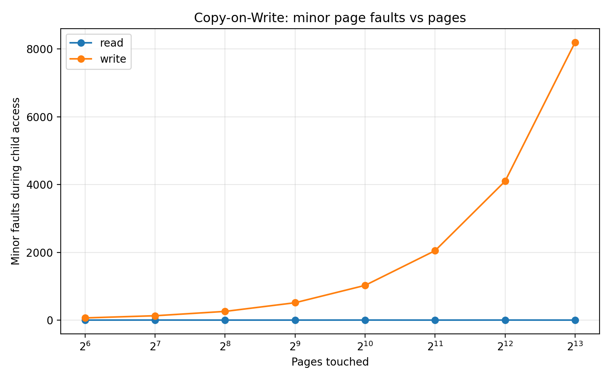
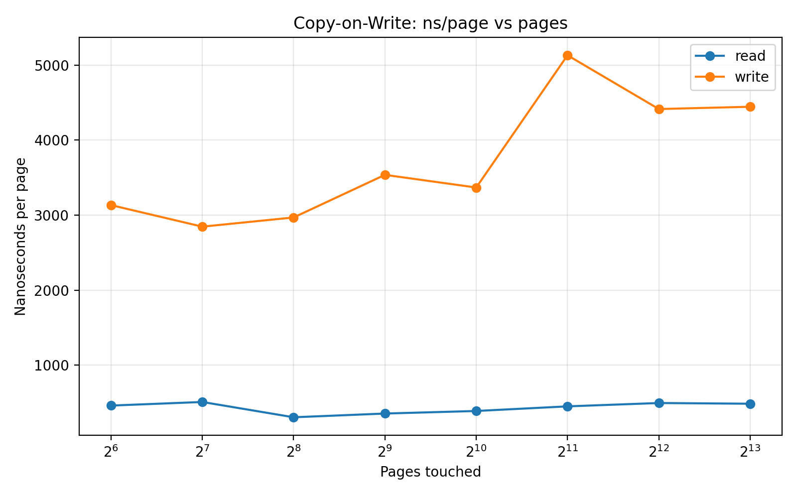
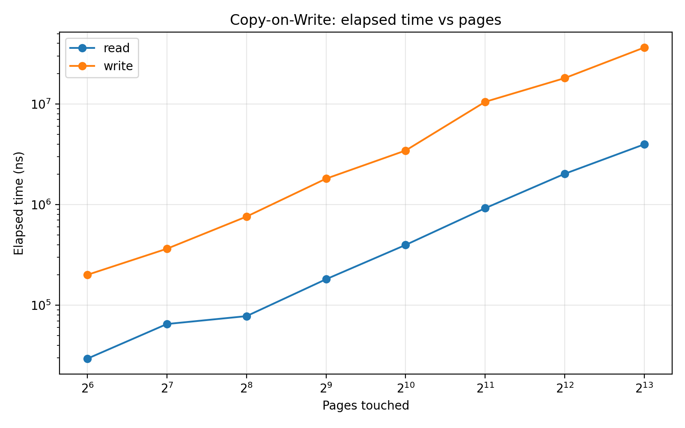

03-copy-on-write in Practice: Measuring fork() Memory Behavior¶
Modern operating systems rely heavily on Copy-on-Write (COW) to make process creation efficient.
At first glance, fork() appears to duplicate the entire memory space of a process.
However, copying gigabytes of memory during every fork() would be extremely expensive.
Instead, operating systems use lazy duplication through Copy-on-Write.
This lab measures that behavior directly.
How Copy-on-Write Works¶
When fork() is called:
- The child receives the same virtual address space layout as the parent.
- Physical pages are not immediately copied.
- Parent and child share the same pages as read-only.
- When either process writes to a page, a page fault occurs.
- The kernel allocates a new page and copies the original data.
This mechanism ensures that memory duplication only happens when necessary.
Experimental Setup¶
The program performs the following steps:
- Allocate a large anonymous memory region using
mmap(). - Touch every page in the parent process (warm-up).
- Call
fork()to create a child process. - The child then accesses the memory in two modes:
Read mode
read one byte from each page
Write mode
write one byte to each page
The program measures:
- elapsed time
- minor page faults (
ru_minflt) - major page faults (
ru_majflt)
The number of pages accessed varies from:
64 → 8192 pages
Minor Page Faults¶
The first signal of Copy-on-Write appears in the number of minor page faults.

Key observation:
write_faults ≈ number_of_pages
Example measurements:
pages=64 → minflt=69
pages=1024 → minflt=1029
pages=8192 → minflt=8196
The small constant offset (~4–5 faults) comes from runtime overhead.
In contrast, read access generates almost no additional faults.
read faults ≈ 4–5
This clearly demonstrates:
Writing to a shared page triggers exactly one Copy-on-Write fault.
Cost Per Page¶
Next we examine the cost per page access.

Observed values:
| Mode | Cost per page |
|---|---|
| Read | ~600–870 ns |
| Write | ~3800–7200 ns |
Thus:
write ≈ 4–10× slower than read
The additional overhead comes from:
- page fault handling
- physical page allocation
- memory copy
- page table updates
Total Execution Time¶
Total runtime scales with the number of written pages.

Example measurements:
pages=64 → 0.36 ms
pages=512 → 3.65 ms
pages=4096 → 22.0 ms
pages=8192 → 49.3 ms
The relationship is approximately:
total_time ∝ number_of_pages_written
Each written page triggers:
- page fault
- page allocation
- page copy
- page table update
Major Page Faults¶
Throughout the experiment:
major_faults = 0
This means:
- no disk-backed paging occurred
- all page faults were handled entirely in memory
Thus the overhead observed here is purely due to Copy-on-Write page creation.
Key Findings¶
This experiment reveals several important properties of fork():
1. Memory is not copied immediately¶
After fork(), parent and child initially share the same physical pages.
2. Reads do not trigger Copy-on-Write¶
Reading shared pages does not require page duplication.
3. Writes trigger page-granular copying¶
Each written page causes exactly one minor page fault.
write_faults ≈ pages
4. Copy-on-Write overhead scales linearly¶
The total runtime increases proportionally with the number of pages written.
Why Copy-on-Write Matters¶
Without Copy-on-Write, fork() would require copying the entire memory space of a process.
For large applications this could be extremely expensive.
Copy-on-Write enables:
- efficient process creation
- fast shell pipelines
- memory-efficient process management
- practical use of
fork()in Unix-like systems
This is one of the key optimizations that makes Unix process semantics viable in modern operating systems.
Takeaway¶
The experiment confirms that Linux implements page-granular Copy-on-Write for fork().
Key observations:
read_faults ≈ constant
write_faults ≈ pages
write_cost ≈ 7× read_cost
major_faults = 0
In other words:
fork()does not copy memory eagerly — memory is duplicated lazily on write.
References¶
Linux manual pages:
fork(2)mmap(2)getrusage(2)